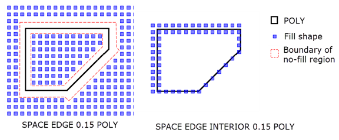

DFM Spec Fill
Specification statement
License: Calibre YieldEnhancer
Creates a fill specification that can be used with DFM Fill to generate fill layers.
Usage
DFM SPEC FILL spec_name
[analyze_layer …]
[ {OPTIMIZER optimizer_name} | {optimization_criteria}]
[ RDB [MISSEDONLY] [FILLEDONLY] db_name]
[DEBUG SPACE oasis_filename [starting_layer_number]]
[ WINDOW {w | wx wy} [STEP {s | sx sy}] [BACKUP] ]
[ GWINDOW {gw | gx gy} [STEP {gs | gsx gsy}]] [WRAP]
[{INSIDE OF EXTENT} |
{INSIDE OF x1 y1 x2 y2} |
{INSIDE OF LAYER [BY POLYGON] layer_analyze [layer_fill]}]
[ INITIAL layer [origin] |
INITIAL FILLREGION [origin] |
INITIAL INSIDE OF LAYER [origin] |
INITIAL POINT x y [origin]]
[ COLOR SCHEME {CHECKER | CHECKER3 | ALTERNATE | ALTERNATEX |
ALTERNATEY}]
{fill_pattern_definition
[PRIORITY [NOOVERLAP] optimizer_name1 optimizer_name2 … optimizer_namen]
[DISPLACE x y]
[STEP {step | xstep ystep}] [ OFFSET {offset | xoffset yoffset}]
[SETBACK {setback | xsetback ysetback}]
[ALLOW ‘[’ spacing_expr ‘]’ … | {ALLOWX ‘[’ spacing_expr_x ‘]’ …}
{ALLOWY ‘[’ spacing_expr_y ‘]’ …}]
[AUTOROTATE [E | D | EP | Z] ]
[FILLMIN | FILLMAX]
[REPEAT [number | PRECISE]]
[SHAPESPACE [BY EXTENT]
[before_space | ‘[’ before_x before_y ‘]’] {after_space | ‘[’ after_x after_y ‘]’} ]
[EFFORT effort_value | EFFORT PITCH x_pitch y_pitch]
[
{{SPACE | SPACEX | SPACEY} [INTERIOR] space_rule space_layer}
| {{SPACE | SPACEX | SPACEY} {'['space_range']' …} space_layer}
| {SPACE EDGE [INTERIOR]
{space_rule | {INSIDE BY space_inside OUTSIDE BY space_outside} }
space_layer}
| {SPACEXY EDGE [DEANGLED {ALL | KEEP45 | NONE}] [INTERIOR]
INSIDE BY spacex_in spacey_in OUTSIDE BY spacex_out spacey_out
space_layer}
| {SPACEXY [EDGE] [DEANGLED {ALL | KEEP45 | NONE}]
[INTERIOR] [EXTEND BY space_extend]
space_xval space_yval space_layer}
| {SPACE WRAP fillshape_count space_rule space_layer}
] …
[ELLIPTICAL | {EUCLIDEAN [constraint]} | {OPPOSITE EXTENDED [x y]}
| {EUCLIDEAN [constraint] OPPOSITE EXTENDED [x y]}]
[ FLIPX ]
[ ROTATION { 0 | 90 | 180 | 270 } ]
[ PARTITION [ GAP {partition_gap | partition_gapx partition_gapy}] ]
} …
The syntax for fill_pattern_definition follows. You must begin each fill pattern definition with one of: FILLSHAPE, RECTFILL, POLYFILL, STRETCHFILL, STRIPE, or FILLSTACK.
FILLSHAPE Syntax
{FILLSHAPE [basename] { OUTPUT output_name “shape_name”} … }
RECTFILL Syntax
{RECTFILL [basename] [OUTPUT output_name] x1 y1 x2 y2
[OUTPUT output_name x1 y1 x2 y2] …}
POLYFILL Syntax
{POLYFILL [basename] [OUTPUT output_name] x1 y1 x2 y2 x3 y3 [{xn yn}…]
[OUTPUT output_name x1 y1 x2 y2 x3 y3 [{xn yn}…]]…}
STRETCHFILL Syntax
{STRETCHFILL [basename]
{[OUTPUT output_name] x1 y1 x2 y2 max_x max_y stretch_incr } …}
STRIPE Syntax
{STRIPE [basename] width [separation] [HORIZONTAL | VERTICAL]
{{[CENTERED]
[TRIM trim_BL trim_TR] [SLIP shift_value]
[MINLENGTH min_len] [MAXLENGTH max_len [GAP gap_len]] }
| [DISTRIBUTE segment_len MINGAP min_gap] }
}
FILLSTACK Syntax
{FILLSTACK [basename] [MINSTACK min_stack_size] [MAXSTACK max_stack_size]
{OUTPUT [output_number] [VIA] output_name “shape_name”
[OUTPUT [output_number] [VIA] output_name “shape_name”]...} }
Arguments
There is some order-dependence within the arguments for DFM Spec Fill: The spec_name and optional optimizer information must appear before all other arguments. The fill_pattern_definition must appear as shown in the syntax definition. The arguments after the fill_pattern_definition apply to the preceding fill_pattern_definition. You may specify more than one fill_pattern_definition and associated arguments.
- spec_name
A required argument assigning a name by which this fill specification can be referenced.
- analyze_layer …
An optional argument that is used when an inline optimizer is specified with optimization_criteria. This argument lists the names of all layers referenced in the optimization_criteria. However, if a layer is used in a DFM Spec Fill Shape statement referenced by the DFM Spec Fill statement, it does not need to be listed in the analyze_layer list.
These layers may or may not be the same as the layers used to constrain the placement of the generated fill, such as the space_layer defined through DFM Spec Fill Shape or the DFM Spec Fill.
If specifying more than one layer, make sure that these are not copies of the same original layer. This generates a syntax error. For example, if the original layer is A, then the following set of commands will work correctly:
ANALYZE_LAYER_B = COPY A ANALYZE_LAYER_C = COPY ANALYZE_LAYER_B DFM SPEC FILL OPTIMIZER "spec1" ... ANALYZE_LAYER_B ANALYZE_LAYER_CSpecifying the following will generate an error:
ANALYZE_LAYER_B = COPY A ANALYZE_LAYER_C = COPY A ...- OPTIMIZER optimizer_name
An optional argument supplying the name of the optimizer to use for fill shapes added based on this fill specification. This optimizer is used for all fill shapes specified through the DFM Spec Fill statement.
The optimizer definition is specified with the DFM Spec Fill Optimizer statement. The optimizer_name argument comes from this specification.
You may specify OPTIMIZER optimizer_name or optimization_criteria, but not both. OPTIMIZER optimizer_name is recommended.
CAUTION:OPTIMIZER does not work with any variable fill shape, such as are specified with keywords like STRETCHFILL or STRIPE. Failure to observe this restriction can cause incorrect output.
- optimization_criteria
An optional argument, provided for backward compatibility, that allows you to supply an inline definition of how fill shapes should be optimally for this fill specification. This is equivalent to defining an optimizer using DFM Spec Fill Optimizer, then referencing it by name. The syntax for defining an inline optimizer is the following:
‘[’ optimization_expression ‘]’ [optimization_limit] [TOMAX] [GRADIENT gradient_constraint [ABSOLUTE | RELATIVE] [CORNER]] [MAGNITUDE magnitude_constraint [ABSOLUTE | RELATIVE]]
Unlike the case with DFM Spec Fill Optimizer, you may only specify numerical constraints for optimization_limit (using numbers and unary or binary operators). You cannot specify a constraint expression.
For a complete description of these keywords and arguments, refer to the syntax description for DFM Spec Fill Optimizer.
If you specify an optimization_criteria you cannot specify OPTIMIZER optimizer_name.
CAUTION:The optimization_criteria argument is not supported by variable fill shapes like STRETCHFILL or STRIPE. Failure to observe this restriction can cause incorrect output.
- RDB [MISSEDONLY] [FILLEDONLY] db_name
An optional keyword set that causes the operation to generate a results database file (RDB) named db_name. The RDB contains statistics about the generated fill and the optimization criteria. This keyword can only be specified if an OPTIMIZER or optimization_criteria is specified. Within the db_name, the pattern substitution facility replaces all occurrences of the pattern “%_t_” with the name of the top cell for the design.
When specified, this keyword must appear before any fill_pattern_definition.
The secondary keywords, MISSEDONLY and FILLEDONLY, define the windows for which statistics are written to the RDB:
Default — Report statistics for each data capture window in the design.
MISSEDONLY — Report statistics only for data capture windows that did not meet optimizer constraints.
FILLEDONLY — Report statistics only for data capture windows to which fill was added. Statistics are not reported for windows that satisfy the constraints without needing any additional fill.
The results database includes the following statistics:
Original design densities and gradients.
Achieved densities and gradients.
Detailed information of gradient dependencies.
Possible number of fill shapes of each fill shape type that could be generated for each window.
Number of shapes actually generated and added to the output layer.
For details on the RDB format, see “Fill RDB File Format” in the Calibre YieldAnalyzer and YieldEnhancer User’s and Reference Manual.
- DEBUG SPACE oasis_filename [starting_layer_number]
An optional keyword and filename that specify to write debugging information to an output file in OASIS format (oasis_filename). Spacing layers, which represent empty areas, and fill layers are written to the output file. You must specify this keyword before the fill pattern specifications (FILLSHAPE, FILLSTACK, POLYFILL, RECTFILL, or STRETCHFILL)
You can optionally specify starting_layer_number to indicate the starting number for the output layers. If you do not specify starting_layer_number, the layer numbers begin at 1 and increment sequentially.
A space layer used in more than one fill shape specification is output once, the first time it is used.
CAUTION:Use the DEBUG SPACE keyword for rule file development and debugging only. Longer run times and large output files result from using this keyword.
- WINDOW {w | wx wy} [ STEP {s | sx sy} ] [BACKUP]
An optional keyword set used to specify the size of the data capture window within which the optimization_expression is to be calculated. The operation partitions the design into rectangular areas of the specified size. If WINDOW is not specified, the data capture window defaults to the analyze extent. When WINDOW is specified, there are restrictions on the fill shape size; see “Restrictions on Window, Step, and Fill Shape Size”.
WINDOW {w | wx wy} — Specifies the window size.
w — The window is a square with sides w user units long.
wx wy — The window is a rectangle that is wx user units long and wy user units high.
By default, the tool truncates the WINDOW to the boundary size if the WINDOW is larger than the boundary in the x-direction or y-direction.
If STEP is also specified, the WINDOW dimensions w, or wx and wy, must be a multiple of the corresponding STEP size s, sx, or sy.
STEP {s | sx sy} — An optional keyword set with WINDOW that defines an offset for the analysis window. The optimization_expression is evaluated first with an analysis window grid at offset (0,0). The grid is then shifted and optimization is repeated.
s — The offset is s user units in the x and y directions.
sx sy — The offset is sx and sy in the x and y directions, respectively.
Assuming sx and sy are specified, optimization is repeated at the following offsets:
(0,0), (sx,0), (2*sx,0), … (0, sy), (sx, sy), (2*sx, sy), … (Nx*sx,Ny*sy)
Where:
Nx = (wx/sx) - 1
Ny = (wy/sy) - 1
BACKUP — Optional keyword for WINDOW that modifies the capture windows on the right and top edges of the optimization area. When BACKUP is specified, these windows are shifted left or down until they align with the right and top edges of the design. Partial windows on the edges of the design are thus eliminated. The BACKUP keyword is similar to the BACKUP keyword for the Density operation.
- GWINDOW gwx gwy [STEP {gs | gsx gsy}]
An optional keyword used to define a separate grid to be used for optimizing to meet the gradient constraint. If GWINDOW is specified, then gradient optimization will be performed at the grid specified by this argument instead of WINDOW.
The following restrictions are imposed on arguments of the WINDOW or GWINDOW options:
gwx >= gsx
gwy >= gsy
wx,sx,gwx,gsx must be a multiple of the smallest of sx or gsx.
wy,sy,gwy,gsy must be a multiple of the smallest of sy or gsy.
Note:Limitation of WINDOW STEP and GWINDOW: When these options are used to define step and gradient window sizes that are different from WINDOW size, the optimization_expression is assumed to be of a straightforward representation of density, such as [AREA(meta)/AREA()]. This restriction comes from the need to convert target density values from large WINDOW or GWINDOW to atomic subwindows. This is done by adjusting the value proportionally to the area of the window.
See “Restrictions When Both WINDOW and GWINDOW Are Defined” for a definition of the atomic subwindow and restrictions on the fill shape size.
- WRAP
An optional keyword, allowed only when an OPTIMIZER is specified, used to control how the gradient is calculated at the edges of the design.
When you specify WRAP, the gradient calculation for windows at the edge of the design calculates gradient to the window on other side of the design, thus assuming that design will be repeated on the die.
- INSIDE OF EXTENT | INSIDE OF x1 y1 x2 y2 | INSIDE OF LAYER [BY POLYGON] layer_analyze [layer_fill]
An optional keyword choice that defines the boundary within which fill geometries are generated, called the “work zone”. Only one keyword from this set may be specified. By default, the work zone is the extent of the design database that is read in by Calibre.
INSIDE OF EXTENT
Specifies that the work zone is the overall extent of all input layers to the corresponding DFM Fill operation. This includes layers that are used in the DFM Spec Fill statement and layers that are used in any referenced DFM Spec Fill Shape specifications.
INSIDE OF x1 y1 x2 y2
Specifies that the work zone is a rectangle, where the x1,y1 and x2, y2 coordinate pairs define the lower-left and upper-right corners of the rectangle. The coordinates are in user units. If a coordinate is negative, it must be enclosed in parentheses ( ). The sides of the rectangle must be orthogonal to the database axes.
INSIDE OF LAYER [BY POLYGON] layer_analyze [layer_fill]
Specifies that the work zone is defined by polygons on a specified layer. The specified layer(s) must be original or derived polygon layers.
BY POLYGON — An optional keyword that affects the optimization regions, as explained later.
layer_analyze — When one layer is specified, layer_analyze defines both the work zone and the optimization regions. Fill is placed within the boundaries of the polygons on layer_analyze. The optimization region is determined by layer_analyze as described in the subsequent discussion.
layer_analyze layer_fill — When two layers are specified, they respectively define the optimization regions and the work zone. Fill is placed within the boundaries of the polygons on layer_fill. The optimization region is determined by layer_analyze as described in the subsequent discussion.
It is strongly advised that polygons on layer_fill be completely enclosed inside of polygons on layer_analyze. Otherwise, the behavior of the command is undefined.
Optimization regions — When an optimizer is specified, the optimization regions are the areas in which the optimization criteria (usually a density) is calculated. The optimization regions are affected by the BY POLYGON keyword.
Default — The optimization region is the extent of all polygons on layer_analyze.
By default, the optimization region is not the same as the work zone.
BY POLYGON — For each polygon on layer_analyze, an optimization region is created from the extent of each polygon. Fill is optimized within each optimization region. The extent of the polygons on layer_analyze should not overlap.
BY POLYGON does not affect the work zone (the region considered for placing fill). BY POLYGON has no effect when an optimizer is not specified.
Note:The BY POLYGON keyword can reduce performance considerably. Exercise care when using this keyword and limit the number of polygons so that the impact to run time and memory usage is minimized.
See “Example 17” for a comparison of INSIDE OF LAYER with and without BY POLYGON.
- INITIAL {layer | FILLREGION | INSIDE OF LAYER | POINT x y} [alignment]
An optional keyword set that controls the location and alignment of the fill placement grid. The placement grid consists of possible locations of a fill shape.
INITIAL layer — Align the fill placement grid to the extent of layer, which is a polygon or edge layer. A single fill placement grid is used for all fill regions.
INITIAL FILLREGION — Align the fill placement grid to the extent of each internal fill region. The internal fill region is calculated by the tool and is affected by the work zone and spacing rules. Each internal fill region has a separate fill placement grid.
INITIAL FILLREGION CENTER is the default if the INITIAL keyword is not specified. See Figure 1.
INITIAL INSIDE OF LAYER — Align the fill placement grid to the extent of each polygon on the layer used to specify the work zone by the INSIDE OF LAYER keyword. Each polygon provides a separate fill placement grid. Only valid when INSIDE OF LAYER is specified. See “Example 18”.
INITIAL POINT x y — Align the fill placement grid to the specified x and y coordinates in user units. Negative coordinate values should be enclosed in parentheses. A single fill placement grid is used for all fill regions.
alignment — The optional alignment argument specifies how to align the placement grid and fill shape extent relative to the extent or coordinate point specified by the INITIAL keyword choice. See Figure 1.
LL — Lower left alignment. This is the default alignment when any of the INITIAL keywords are specified without the alignment argument.
LR — Lower right alignment.
UL — Upper left alignment.
UR — Upper right alignment.
CENTER — Center alignment. The alignment point is the center of the extent specified by the INITIAL keyword choice. The center of a fill shape extent coincides with an alignment point.
Note:When INITIAL is not specified, the default behavior for the fill operation is INITIAL FILLREGION CENTER.
When an INITIAL keyword is specified without an alignment argument, the default alignment is LL (lower left).
The following figure shows two fill placement grids for a design with two internal fill regions. INITIAL FILLREGION CENTER creates two placement grids, each centered in a fill region; this is the default when INITIAL is not specified. INITIAL boundary LL creates one placement grid within the extent of the boundary layer and aligns the grid to the lower left of the extent of the boundary layer.
Figure 1. INITIAL Keyword in DFM Spec FillThe following figure illustrates the alignment arguments.
Figure 2. alignment Argument for INITIAL Keywords in DFM Spec Fill
INITIAL cannot be specified with “EFFORT effort_value”, but it can be specified with EFFORT PITCH.
- COLOR SCHEME {CHECKER | CHECKER3 | ALTERNATE | ALTERNATEX | ALTERNATEY}
An optional keyword that specifies the color scheme choice. You must specify this keyword before the fill pattern specifications (FILLSHAPE, FILLSTACK, POLYFILL, RECTFILL, or STRETCHFILL).
Specifying COLOR SCHEME is valid only when DFM Fill … COLOR is specified. Choose from one of the following:
CHECKER — Specifies using a checker pattern as illustrated by Figure 2, in DFM Spec Fill Shape.
CHECKER3 — Specifies using a 3-color checkerboard pattern as shown in Figure 3, in DFM Spec Fill Shape.The three colors are specified on output layers of the command.
ALTERNATE — Specifies using row or column coloring as illustrated in Figure 4, in DFM Spec Fill Shape. If you use the OFFSET keyword, one of the values must be non-zero.
ALTERNATEX — Specifies a color scheme with two colors assigned in vertical stripes as shown in Figure 6, in DFM Spec Fill Shape.
ALTERNATEY — Specifies a color scheme with two colors assigned in horizontal stripes as shown in Figure 7, in DFM Spec Fill Shape.
Once specified, COLOR SCHEME applies to all fill shapes. If named fill shapes also have COLOR SCHEME specified (as defined with DFM Spec Fill Shape), then you must match the color scheme options. Unmatched color scheme definitions result in a compiler error.
- fill_pattern_definition
A required argument that describes the fill pattern. You must specify at least one fill_pattern_definition and it must conform to the syntax described in the Usage section of this statement. There is no limit on the number of fill_pattern_definitions you can specify.
A fill_pattern_definition must be the final section of the DFM Fill specification. Fill geometry is generated one fill_pattern_definition at a time, in the order specified.
- basename
An optional argument used to generate the cell names that are used for compression cells generated by DFM Fill with the COMPRESS keyword. The basename string cannot contain spaces or underscores (_). You can use basename with all fill shape keywords.
It is recommended that you specify basename when using the COMPRESS keyword in DFM Fill. If basename is not specified when COMPRESS is used, spec_name is used instead when generating the names of compression cells. See “Compression Cell Naming” for more information.
- OUTPUT output_name
A keyword and argument that is required when using FILLSHAPE and FILLSTACK and optional when using RECTFILL, POLYFILL, or STRETCHFILL. OUTPUT is not used with STRIPE. This keyword is used to control the output of the associated fill.
When used with RECTFILL, POLYFILL, or STRETCHFILL, this keyword and argument pair must be placed directly preceding the list of vertices for the shapes used to generate this set of fill. All OUTPUTs introduced by the same RECTFILL, POLYFILL, or STRETCH keyword are assumed to be a single cell, the extent of which is used when determining placement of said geometry.
With FILLSHAPE, this keyword and argument pair is required and must precede each shape_name. All OUTPUTS introduced by the same FILLSHAPE keyword are assumed to be a single cell, the extent of which is used when determining placement of said geometry.
The output_name name can be referenced in the DFM Fill operation to define the exact output to write to a particular results layer. When multiple DFM Fill operations all reference the same DFM Spec Fill, but each specify a different output_name, the operations are processed concurrently, and different types of fill are directed to different output layers.
You can write multiple OUTPUTs to a single layer by including multiple output_names as arguments to a single DFM Fill operation. In this case, geometries from each of the outputs are merged together.
- FILLSHAPE [basename] {OUTPUT output_name “shape_name”} …
A keyword used to introduce the fill shapes that make up the fill pattern. This keyword is used when the individual layer shapes have been defined using the DFM Spec Fill Shape statement. Each shape_name specified must be enclosed in quotes.
For 2-D fill shapes, this keyword is generally followed by a single fill definition, that is OUTPUT… shape_name. When multiple fill definitions are supplied, the output_names are usually all the same.
For multilayer fill shapes, this keyword is followed by two or more fill definitions, that is OUTPUT… shape_name, and the output_names are all unique.
Note:A shape_name is associated with the OUTPUT that immediately precedes it. If no such OUTPUT is present, the fill created using this shape will only be returned as output to a DFM Fill command that does not list any outputs.
- POLYFILL [basename] [OUTPUT output_name] x1 y1 x2 y2 x3 y3 [{xn yn}…]
A keyword used to introduce the fill shapes that make up the fill pattern that is comprised of one or more polygons when the individual shapes have not been defined using the DFM Spec Fill Shape statement. The polygons are defined by one or more lists of vertices, which directly follow the keyword. If a vertex coordinate is negative, it must be enclosed in parentheses ( ).
The operation uses each pair of coordinates as a vertex of a closed polygon, that is at least three pairs must be specified. To define multiple polygons for POLYFILL, you must define each polygon in its entirety before defining subsequent polygons. You indicate the completion of one polygon by repeating the final vertex. The vertex after a repeated vertex is treated as the beginning of a new polygon.
The last vertex in a polygon may or may not match the first one. If it does not, the polygon will be automatically closed; the last vertex will be connected to the first one.
Edges defined by the vertices must not intersect.
Polygons with holes in them can be defined by using 0-wide cuts, that is the edge-in is same as edge-out, but in the opposite direction. Refer to DFM Spec Fill Figure 21 for an example of this.
When creating a polygon with holes in it, vertices of the polygon exterior should be enumerated in counter-clockwise direction, whereas inside holes should be enumerated in clockwise direction. This prevents cut lines from intersecting.
You must specify at least one set of vertices. Multiple sets of vertices are allowed. When multiple sets of vertices are supplied, each must be preceded by OUTPUT output_name.
- RECTFILL [basename] [OUTPUT output_name] {x1 y1 x2 y2}
A keyword used to introduce the fill shapes that make up the fill pattern that is comprised of a rectangle when the individual shapes have not been defined using the DFM Spec Fill Shape statement. The rectangles are defined by a pair of vertices, which directly follow the keyword. Each pair of coordinates are diagonally opposed vertices of a rectangle. If a coordinate is negative, it must be enclosed in parentheses ( ).
You must specify at least one set of vertices. Multiple sets of vertices are allowed. When multiple sets of vertices are supplied, each must be preceded by OUTPUT output_name.
- STRETCHFILL {x1 y1 x2 y2 max_x max_y stretch_incr } …
A keyword set that defines rectangular fill shapes that can stretch in either the x or y direction. The stretchable rectangles are defined by one or more lists of seven numeric arguments that directly follow the keyword. If a coordinate is negative, it must be enclosed in parentheses ( ).
Each list of seven arguments is interpreted as follows:
x1 y1 x2 y2 — Defines the minimum fill rectangle with a pair of vertices.
max_x max_y — Defines the direction the fill shape is allowed to stretch, and how far it can be stretched in that direction. At least one direction must remain constant. STRETCHFILL cannot stretch in both directions. The value of the direction to remain constant must be either set to 0 or to the defined minimum dimension. The non-zero value defines the maximum stretch, in user units, of the fill shape in the specified direction.
For example, given the minimum fill rectangle definition 0 0 0.4 0.15 (x1 y1 x2 y2), these max_x max_y definitions affect the fill shapes as follows:
1.20 0 or 1.20 0.15 — Stretches fill shapes in the x direction, with maximum fill shape width of 1.20 microns; does not stretch fill shapes in the y direction (max_y = y2).
0 1.50 or 0.40 1.50 — Does not stretch fill shapes in the x direction (max_x = x2); stretches fill shapes in the y direction, with maximum fill shape height of 1.50 microns.
stretch_incr — Defines the increment in user units by which to stretch the fill shape.
The combination of minimum rectangle size, maximum stretched size, and stretch increment must result in 40 or fewer possible rectangle sizes (including the minimum rectangle). For a stretch in the x direction, this requirement can be stated like this:
( (max_x - (x2 - x1)) / stretch_incr ) + 1 <= 40
See “Example 5”.
CAUTION:Do not specify STRETCHFILL with an optimizer. Optimizers do not produce correct output with variable-sized fill shapes.
- STRIPE [basename] width [separation] [HORIZONTAL | VERTICAL]
{{[CENTERED] [TRIM trim_BL trim_TR] [SLIP shift_value] [MINLENGTH min_len] [MAXLENGTH max_len [GAP gap_len]] }
| [DISTRIBUTE segment_len MINGAP min_gap] }
A set of arguments that specify to create horizontal or vertical stripes in a fill region. The default stripe orientation is HORIZONTAL. The Calibre command line should specify ‑hier if any of these arguments are used: TRIM, SLIP, MINLENGTH, MAXLENGTH, GAP, or DISTRIBUTE.
width — Required value that specifies the width of each stripe in user-defined units.
separation — Optional value that specifies the distance between stripes in user-defined units. If this is not specified, width is used as the separation value.
{HORIZONTAL | VERTICAL} — Optional keyword that specifies to create horizontal or vertical stripes in the fill region. The default behavior is to create horizontal stripes.
CENTERED — An optional keyword that specifies to center the stripes. When specified for HORIZONTAL stripes, the stripes are centered top to bottom, leaving approximately equal empty regions at the top and bottom of the fill region. When specified for VERTICAL stripes, the stripes are centered left to right.
Because CENTERED is applied before conflict checking and before other keywords (such as MINLENGTH), the centered stripes may be affected by subsequent processing.
The use of CENTERED overrides any INITIAL keywords. DISPLACE cannot be used with CENTERED.
TRIM trim_BL trim_TR — Optional keyword and values that specify to shorten the length of a stripe relative to the overall length of a multilayer stripe fill shape. Trim values must be positive.
The trim_BL value specifies to trim the left edge of a horizontal stripe or the bottom edge of a vertical stripe. The trim_TR value specifies to trim the right edge of a horizontal edge stripe or the top of a vertical stripe.
The value of MINLENGTH min_len must be greater than the sum of the largest trim_BL and trim_TR values, otherwise an error is generated. If MINLENGTH is not specified, then width plus the sum of the largest trim_BL and trim_TR values is used as the min_len value.
See “Example 12” for use for TRIM and SLIP.
SLIP shift_value — Optional keyword and value that specifies to offset stripes in a multi-stripe fill shape in the width direction. Specify a value in user units.
MINLENGTH min_len — Optional keyword and value that specifies to drop any stripes that are shorter than the specified min_len. If MINLENGTH is not specified, then width is used as the min_len value. See the TRIM definition for the default MINLENGTH for a multilayer stripe.
MAXLENGTH max_len [GAP gap_len] — Optional keyword and value set that specifies a maximum length for the stripes. Any stripe exceeding max_len is segmented into stripes with length <= max_len and >= min_len, and separated by at least gap_len. If GAP is not specified, separation is used for gap_len. If possible, a uniform stripe length is used. The values max_len and gap_len are given in user units and must be positive. The value max_len must satisfy max_len >= min_len.
See “Example 11” for the use of MINLENGTH and MAXLENGTH.
DISTRIBUTE segment_len MINGAP min_gap — Optional keyword and value set that evenly distributes fixed-size stripe segments throughout the fill region.
Each stripe segment is a rectangle with width width and length segment_len. The minimum separation between stripes is separation. The minimum gap between segments in the same stripe is min_gap.
If either segment_len or min_gap, or both, is zero, the stripe is not segmented and extends the full length of the fill region. In this case there is no minimum length for the stripe. The COMPRESS keyword in DFM Fill cannot be used in this case.
Stripe segments are first placed as close as possible to the boundaries of the fill region, subject to spacing and other constraints. The remaining stripe segments are placed as uniformly as possible by adjusting the separation between stripes and the gap between segments.
The gap between stripe segments is adjusted separately for each stripe to obtain uniform spacing. If there are two or more stripe segments in a stripe, the two end segments of each stripe touch the fill region boundary and the remaining segments are distributed as uniformly as possible within the stripe. If only one stripe segment can be placed within a stripe, it is centered within the stripe.
For horizontal stripes, two stripes are first placed at the top and bottom of the fill region, then the remaining stripes are placed as evenly as possible. Only the top and bottom stripes are guaranteed to abut horizontal edges of the fill region boundary, as seen in Figure 3. If only one stripe can be placed, it is centered vertically within the region. A similar process is used for vertical stripes.
The following figure illustrates horizontal stripe fill with DISTRIBUTE. See “Example 13” for a complete example. Unlike the case with CENTERED for horizontal stripes, the stripe segments abut the top and bottom edges of the fill region.
Figure 3. STRIPE DISTRIBUTETRIM, SLIP, MINLENGTH, MAXLENGTH, INITIAL, ALLOW, ALLOWX, ALLOWY, and AUTOROTATE cannot be specified with DISTRIBUTE. CENTERED is ignored if specified with DISTRIBUTE.
General STRIPE Behavior — Unlike other fill shapes, which are placed according to the STEP and OFFSET arguments, specifying STRIPE draws the fill stripes through the entire region only when it is possible to keep the specified stripe width.
By default, the first stripe is placed in the center of the fill region, with equally spaced stripes placed to either side of the first stripe. Stripe placement is affected by INITIAL settings, as discussed in “Example 10”. Stripe placement is also affected by the CENTERED and DISTRIBUTE keywords.
CAUTION:Do not specify STRIPE with the OPTIMIZER or optimization_criteria options. Optimization does not work with variable fill shapes and can cause incorrect output.
You can specify multilayer stripe fill shapes but cannot specify STRIPE as part of a multilayer FILLSTACK. See “Example 12” for an example of a multilayer stripe.
Specifying STRIPE with the following options results in a syntax error: STEP, OFFSET, EFFORT, FILLMAX, FILLMIN, EUCLIDEAN, ELLIPTICAL, and OPPOSITE. If REPEAT is used with STRIPE fill, you cannot specify ALLOW, ALLOWX, ALLOWY, or SETBACK.
- FILLSTACK [basename] [MINSTACK min_stack_size] [MAXSTACK max_stack_size] {OUTPUT [output_number] [VIA] {output_name “shape_name”} …} …
A keyword that defines a set of multilayer fill shapes. This keyword iterates over all allowed combinations of the specified layers and generates a fill pattern for each combination. The order of the OUTPUT arguments and the MINSTACK and MAXSTACK keywords determine how the combinations are generated; see the explanation after the argument definitions.
MINSTACK min_stack_size — An optional keyword and argument set that specifies the minimum number of non-VIA layers in any one combination. The default is 1.
MAXSTACK max_stack_size — An optional keyword and argument set that specifies the maximum number of non-VIA layers in any one combination. Once a combination with max_stack_size layers is output, no further combinations are output. The default is the number of non-VIA layers specified with OUTPUT keywords.
OUTPUT — At least one OUTPUT argument set must be specified when using FILLSTACK, with a maximum of 56. The maximum number of layers is 56.
output_number — Required when the basename argument is specified. The output_number is a small positive integer that must be different for each OUTPUT in the FILLSTACK. For file size reasons, the numbers should be as small as possible.
VIA — An optional keyword that specifies the output is for a via layer. The layer is not considered when generating combinations. The associated geometry is output only if adjacent layers in the fill stack are written out. VIA should not be specified for the first or last layer in the fill stack; not following this guideline may cause unexpected results.
output_name “shape_name” — The output_name argument is an alphanumeric string that can include underscores (_). The shape_name is a fill shape name defined by a DFM Spec Fill Shape statement and must be enclosed in quotes. You may specify more than one output_name “shape_name” pair to define tied layers.
Tied Layer Usage — If more than one output_name “shape_name” pair is specified per OUTPUT keyword, then the tool considers the outputs to be part of a tied layer group. This syntax is used:
OUTPUT [output_number] [VIA] output_name “shape_name” tied_output1 “tied_shape1” [tied_outputN “tied_shapeN”]…
When generating valid FILLSTACK combinations, all of the tied layers must be present in order for the tied layer group to be output. If any tied layer is not output, for example due to a spacing violation, none of the layers in the tied group are output.
A tied layer group is counted as one layer toward a MINSTACK or MAXSTACK layer count.
Fillstack Combinations
Fillstack combinations are generated in the order specified by the OUTPUT keyword. Output layers can be skipped, for example due to a spacing violation for the layer, but the order is not changed. The MINSTACK and MAXSTACK keywords place constraints on the number of layers in the fill stack. The behavior is illustrated with several examples in Table 1.
Example assumptions: Eleven outputs are defined in the fill stack: M1, M2, …, M11. Outputs M3 and M8 have a spacing violation and are not output.
Table 1. FILLSTACK Combination Examples Keywords
Output
None
M1,M2, ,M4,M5,M6,M7, ,M9,M10,M11All layers except M3 and M8 are output (M3 and M8 have spacing violations).
MINSTACK 3
M4,M5,M6,M7, ,M9,M10,M11M1 and M2 are not output because they form a stack smaller than the minimum of 3.
MAXSTACK 3
M1,M2, ,M4,M5,M6MAXSTACK 3 causes output to stop after the three-layer stack M4,M5,M6 is output.
MINSTACK 3 MAXSTACK 3
M4,M5,M6MINSTACK prevents output of M1,M2. MAXSTACK stops output after M4,M5,M6 is output.
- PRIORITY [NOOVERLAP] optimizer_name1 optimizer_name2 … optimizer_namen
An optional keyword set that turns on multi-optimizer mode with optimizer priority, where optimizers are run in the order specified:
optimizer_name1 optimizer_name2 … optimizer_namen
These are strings that correspond to the optimizer_name specified with the DFM Spec Fill Shape statement. This keyword is recommended when using multiple optimizers.
NOOVERLAP is an optional argument specifying each optimizer in the list not to affect fill shapes in overlapped regions of prior optimizing analysis areas. That is, if you specify PRIORITY NOOVERLAP, then each optimizer in the list will skip the subsequent optimization pass for each listed optimizer. This results in each optimizer only considering fill shapes in non-overlapping areas between optimizers.
Note:Using PRIORITY only supports the TOMAX and minimum density (“>” or greater than) constraint options. It does not support MAGNITUDE, GRADIENT, or other constraint options. If specifying PRIORITY with REPEAT, it is recommended that you set REPEAT to no greater than 1.
Using PRIORITY may increase run times logarithmically with an increase in the number of optimizers and the value of the REPEAT keyword. For example, specifying two optimizers and setting the REPEAT value to 2 takes exponentially longer than specifying the same optimizers and setting the REPEAT value to 1.
When using the PRIORITY keyword, you must specify all of the optimizers listed. For more information, see “Multiple Grid Multi Optimizer Support” with the DFM Spec Fill Optimizer statement. Also see “Effects of Using PRIORITY with Calibre SmartFill”, within this command.
- DISPLACE x y
An optional keyword and coordinate pair in user units that specifies the displacement for shapes on the placement grid.
The initial point is calculated and the DISPLACE values are added to the point. Values can be positive or negative; both values must be specified even if one is zero.
Note:You must specify INITIAL when using DISPLACE. Specifying DISPLACE without an INITIAL declaration results in a rule compilation error.
DISPLACE can be specified for each fill shape in a DFM Spec Fill operation. However, DISPLACE cannot be used with STRIPE CENTERED.
- STEP {step | xstep ystep}
An optional keyword that defines the distance between adjacent fill shapes, as shown in Figure 4.
step — The step distance in both the x and y directions.
xstep ystep — The step distance in the x and y directions, respectively.
The STEP values are in user units. If STEP is not specified, a default step of 1 dbu is used. Using the default value is not recommended.
Figure 4. STEP in DFM Spec FillIt is possible for multiple STEP values to be defined for a fill pattern if STEP is defined in both DFM Spec Fill Shape and DFM Spec Fill. In this case the more restrictive (larger) value is used. For example, assume the following statements:
DFM SPEC FILL SHAPE ONE RECTFILL 0 0 1 1 STEP 0.12 DFM SPEC FILL "OUT" FILLSHAPE OUTPUT "OUT1" "ONE" STEP 0.06The geometries in OUT1 use a step value of 0.12.
Fill shapes within the same fill region satisfy the STEP spacing by construction. If two adjacent fill regions are spaced closer together than the STEP value, it is possible for fill shapes in different fill regions to violate the STEP spacing. This situation is handled as follows, depending on whether SETBACK is specified.
Keywords
Shapes in same fill regions must satisfy …
Shapes in different fill regions must satisfy …
STEP only
STEP spacing
STEP spacing
STEP and SETBACK
STEP spacing
SETBACK spacing
If two shapes in different fill regions do not satisfy the spacing requirement, one of the shapes is removed.
Corner to corner spacing of shapes in different regions is measured using the ELLIPTICAL metric by default. The EUCLIDEAN or OPPOSITE EXTENDED metrics can be specified instead.
- OFFSET {offset | xoffset yoffset}
An optional keyword that defines an offset between adjacent fill shapes. Use OFFSET to create a staggered fill pattern, as shown in Figure 5.
offset — The offset in both the x and y directions.
xoffset yoffset — The offsets in the x and y directions, respectively.
The OFFSET values are in user units. The offsets are applied in the positive x direction and negative y direction. If OFFSET is not specified, the offset values are 0.
Figure 5. OFFSET in DFM Spec Fill for Staggered Fill ArrayAs shown in the preceding figure, the STEP and OFFSET arguments together determine the location of each fill shape in the array. If a fill shape is composed of multiple polygons, the shape is treated as a cell, with a bounding box being the rectangular extent of all the polygons in the fill shape. The operation calculates the location of the next fill shape as follows:
Assume (X, Y) is the location of the current fill shape.
Coordinates of the next shape in the same row (shape to the right):
Xnext-in-row = X + x_extent + xstep Ynext-in-row = Y - yoffsetCoordinates of the next shape in the same column (shape above):
Xnext-in-column = X + xoffset Ynext-in-column = Y + y_extent + ystepCAUTION:The yoffset for DFM Spec Fill functions differently than for the Rectangles operation. If you are making the transition from a legacy SVRF-based fill solution to DFM Fill, be sure to adjust the offset values accordingly.
- SETBACK {setback | xsetback ysetback}
An optional keyword that defines the minimum spacing between fill shapes in adjacent fill regions. If SETBACK is not specified, the STEP spacing constraint is used by default. If the SETBACK spacing is smaller than the STEP spacing, the SETBACK spacing is ignored and the STEP spacing is used.
SETBACK values are non-negative numbers in user units.
setback — The setback spacing in both the x and y directions.
xsetback ysetback — The setback spacing in the x and y directions, respectively.
If two fill shapes from different fill regions violate the SETBACK spacing or the default STEP spacing, one of the fill shapes is removed.
Figure 6. SETBACK in DFM Spec FillCorner to corner spacing of shapes in different regions is measured using the ELLIPTICAL metric by default. The EUCLIDEAN or OPPOSITE EXTENDED metrics can be specified instead.
When adding STRIPE fill, SETBACK cannot be used if REPEAT is also specified.
- {ALLOW ‘[’ spacing_expr‘]’ …} | {{ALLOWX ‘[’ spacing_expr_x‘]’ …} {ALLOWY ‘[’ spacing_expr_y‘]’ …}}
An optional keyword set that specifies valid spacing ranges between fill shapes in adjacent fill regions. ALLOW specifies minimum spacing for shapes that project. The minimum distance between fill shapes in different regions is set to SETBACK, even if ALLOW ranges are less. For example:
... ALLOW [.007 .026] [.075] SETBACK .013In this case, the minimum spacing will be 0.013 not 0.007.
Each spacing_expr value can have one of two forms:
lower_limit upper_limit — Denotes an inclusive range of spacing values, where lower_limit is less than upper_limit, and each value must be greater than zero. Fill shapes are placed in this range.
value — Denotes a single positive spacing value. This value is used to define an upper or lower bound for a range where fill shapes are not placed.
Note:ALLOW ranges should include the value(s) of SETBACK or undesired shape removal could occur.
The ALLOWX and ALLOWY keywords can be used to specify different ALLOW values for the x and y directions, respectively.
When adding STRIPE fill, the ALLOW keywords cannot be used if REPEAT is also specified.
- AUTOROTATE [E | D | EP | Z]
An optional keyword that directs the fill algorithm to attempt to orient the fill pattern in either the X or Y direction, picking the direction that satisfies a best fill criteria.
E — Fill shapes are rotated to align major axis of the fill shape to the major axis of each region to be filled. This is the default behavior.
D — Fill shapes are inserted at the rotation that provides the larger count of fill shapes.
EP — Fill Shapes are rotated to align the fill shape’s major axis with the minor axis of the extent of each polygon being filled.
Z — Fill Shapes are rotated and inserted only into fill regions that received no fill in the default without AUTOROTATE orientation.
AUTOROTATE can be used with STRETCHFILL, FILLSTACK, or RECTFILL, or with a FILLSHAPE defined using RECTFILL or STRETCHFILL. That is, it cannot be used with either multi-polygonal fill shapes or non-rectangular fill shapes.
The setback, xsetback, and ysetback values are used to determine spacing between rotated and non-rotated shapes in adjacent fill regions so that generated shapes maintain proper spacing. In a case where both xsetback and ysetback are specified, the AUTOROTATE keyword uses the appropriate value, or possibly both values, when checking for conflicts. If only setback is specified, the x and y distances are the same.
- FILLMIN | FILLMAX
An optional keyword choice used with multilayer fill patterns and multiple optimizers. The keywords control how the cell created by combining the individual shapes that make up the multilayer pattern is added with respect to the optimizers. These options are ignored if fewer than two optimizers are referenced by the fill shape.
FILLMIN (default) — Optimization is considered complete when at least one optimizer referenced by the multilayer fill shape meets its density and gradient goals.
FILLMAX — Optimization is considered complete when all optimizers referenced by the multilayer fill shape meet their density goals.
Optimization is performed simultaneously for all layers of the fill shape, which is accomplished by treating all outputs as a single multilayer cell that is placed as a single unit.
- REPEAT [number | PRECISE]
An optional keyword that affects the algorithm used to place fill shapes. You can optionally specify number or PRECISE. If REPEAT is specified without number or PRECISE, the behavior defaults to REPEAT 10.
number — An integer between 1 and 10. The behavior depends on number as follows:
1 — Optimize the internal partitioning of regions that receive fill to maximize the fill density while meeting density and other constraints. The spacing between internal partitions satisfies the maximum (or most conservative) spacing constraint between fill shapes.
2 to 10 — Make multiple passes at filling the specific fill shape until no more shapes are placed. The number argument specifies the maximum number of times a fill shape can be repeated. In most cases, lower number values have less impact on run-time, while higher values provide denser fill. It is recommended that you use the lowest possible number that achieves your desired fill density.
PRECISE — Perform internal partitioning of regions that receive fill as with number=1, but when determining the spacing between internal partitions, calculate separate values for spacing in the x and y directions.
The REPEAT keyword guarantees at least one fill shape in an appropriately sized empty area, density constraints permitting. There may be a performance penalty when using this keyword.
Note:For most scenarios, setting REPEAT to 1 gives the best runtime versus fill insertion rate trade-off.
- SHAPESPACE [BY EXTENT] [before_space | ‘[’ before_x before_y ‘]’] {after_space | ‘[’ after_x after_y ‘]’}
An optional argument set that defines the minimum spacing between the fill geometry generated for the current fill pattern and other fill geometry. The effect of SHAPESPACE is to generate a keep-out area for other fill shapes. When not specified, SHAPESPACE defaults to the STEP value.
Note:SHAPESPACE applies to different fill shapes only. For the same fill shape, spacing between shapes is constrained by the STEP value only.
BY EXTENT — An optional keyword that forces the exclusion of the current fill shapes from the fill regions by its extent. This keyword only applies to the after spacing.
before_space | ‘[’ before_x before_y ‘]’ — An optional argument that specifies the minimum spacing between the fill geometry generated for the current fill pattern and geometry generated by fill shapes already added. The value before_space is the spacing in user units. You can specify different spacing in the x and y directions using the [before_x before_y], where the brackets are required.
after_space | ‘[’ after_x after_y ‘]’ — A required argument with SHAPESPACE that specifies the minimum spacing between the fill geometry generated for the current fill pattern and geometry generated by subsequent fill patterns. The value after_space is the spacing in user units. You can specify different spacing in the x and y directions using the [after_x after_y], where the brackets are required.
When spacing is specified in both the x and y directions, it is a compiler error if both PARTITION and REPEAT with a number value greater than 2 are also specified.
When two SHAPESPACE values affect relation of two fill shapes, the larger of the two space values is used. If both x and y spacing is provided, they are compared independently. For example:
DFM SPEC FILL m1_fill ... FILLSHAPE fs_1 ... SHAPESPACE 0.5 FILLSHAPE fs_2 ... SHAPESPACE 0.4 FILLSHAPE fs_3 ... SHAPESPACE [0.6 0.4] 0.7will result in the following spacing between fill shapes:
fs_1 to fs_2 spacing x, y = 0.5 fs_1 to fs_3 spacing x=0.6, y=0.5 (larger of [0.6 0.4] and .5) fs_2 to fs_3 spacing x=0.6, y=0.4 (larger of [0.6 0.4] and .4)The after spacing is required in fs_3, but it is not used because there is no fill shape placed after fs_3.
- {EFFORT effort_value} | {EFFORT PITCH x_pitch y_pitch}
An optional keyword and value defining how much computing should be used to optimize fill placement. This keyword lets you make the trade-off between optimal fill placement and run-time. Choose one of the following options:
EFFORT effort_value — The effort_value is an integer from 1 to 10. Higher values of EFFORT generate multiple trial placements for the associated fill shape, allowing the operation to select the best fitting pattern. Here, “best fitting” is defined as the one that adds the greatest number of fill patterns to a fillable area, while keeping the fill centered in the region. Increasing the EFFORT value instructs the operation to try a larger number of initial fill positions and therefore produce better fitting fill. However, increasing EFFORT will result in a longer run time, with run times for filling a specific area increasing exponentially as EFFORT increases.
By default, EFFORT is set to 1, which means the operation does not compare placements of fill patterns. The operation places the center of the initial FILLSHAPE at the center of the area to be filled, then extends the fill outward as defined by STEP and OFFSET. When EFFORT is greater than 1, the operation generates additional placements by placing the center of the initial FILLSHAPE at a different point within the locus of possible initial placement locations. This locus of possible initial placement locations is a rectangular area with its lower left corner in the center of the area to filled with dimensions as follows:
StrideX = Fill shape extent in X direction + STEP
StrideY = Fill shape extent in Y direction + STEP
The EFFORT defines the number of placements to try in the X and Y directions, as illustrated in the following figure.
Figure 7. Relating Fill Extents to EffortNote that placement locations are limited by the design resolution, and snap to grid. Therefore the maximum number of placements tried is (EFFORT*EFFORT). If you specify an EFFORT value greater than 1, it is recommended that you use a value of 4 for an optimal trade-off between performance and quality of results.
Note:“EFFORT effort_value” cannot be specified with INITIAL; however EFFORT PITCH can be specified with INITIAL.
EFFORT PITCH {x_pitch y_pitch} — This keyword replaces the calculation of different placement positions (loci) and uses the values specified by x_pitch and y_pitch. Both x_pitch and y_pitch are required and are positive integers.
If STEP is not an even multiple of the x_pitch and y_pitch values, then a warning is issued.
Note:EFFORT PITCH is not supported with the STRIPE fill pattern definition.
Figure 8. EFFORT PITCHA zero can be specified for either x_pitch or y_pitch, but not both. If you specify 0 for either x_pitch or y_pitch, then the locus points are in one direction as shown in the following figure.
Figure 9. EFFORT PITCH with Zero Pitch ValueSpecifying a -1 for either x_pitch or y_pitch signifies a special condition that is only used with the REPEAT and any INITIAL keyword. When specified, the first pass of the first REPEAT iteration attempts on-grid fill and subsequent iterations adjust the ‑1 direction for the best fit off-grid.
For example, if the following is specified:
EFFORT PITCH (-1.0) 2 ...REPEATsubsequent passes ignore the X initial point and an off-grid X point is calculated that produces the most fill.
- [
{{SPACE | SPACEX | SPACEY} [INTERIOR] space_rule space_layer}
| {{SPACE | SPACEX | SPACEY}{'['space_range']' …} space_layer}
| {SPACE EDGE [INTERIOR] {space_rule | {INSIDE BY space_inside OUTSIDE BY space_outside}} space_layer}
| {SPACEXY EDGE [DEANGLED {ALL | KEEP45 | NONE}] [INTERIOR] INSIDE BY spacex_in spacey_in OUTSIDE BY spacex out spacey_out space_layer}
| {SPACEXY [EDGE] [DEANGLED {ALL | KEEP45 | NONE}] [EXTEND BY space_extend] [INTERIOR] space_valx space_valy space_layer}
| {SPACE WRAP fillshape_count space_rule space_layer}
] …
An optional keyword and argument set that defines a spacing constraint between the fill shapes and shapes on the space_layer. The keyword and argument set may be specified more than once.
The space_layer can be a polygon layer or a derived edge layer in most cases. The behavior is different for polygon and edge layers; see the following definitions. The INTERIOR and SPACE WRAP keywords are not supported with edge layers.
It is possible for multiple spacing constraints to be defined for interactions between a fill shape and a specific space_layer; for example, in a DFM Spec Fill Shape statement and in a DFM Spec Fill statement. In this case, the more restrictive constraint is used.
For example, assume the following statements:
DFM SPEC FILL SHAPE ONE RECTFILL 0 0 1 1 SPACE .12 M1 DFM SPEC FILL SHAPE TWO RECTFILL 0 0 2 2 SPACE .24 M1DFM SPEC FILL SPEC_OUT FILLSHAPE OUTPUT "OUT1" "ONE" OUTPUT "OUT2" "TWO" SPACE 0.15 M1The combined multilayer shape has spacing to M1 greater than 0.24.
{SPACE | SPACEX | SPACEY} [INTERIOR] space_rule space_layer
Generates a no-fill region within space_rule distance of space_layer, where space_rule is a positive number in user units. SPACEX and SPACEY apply the spacing rule only to vertical and horizontal edges, respectively, of the objects on space_layer.
The behavior depends on the layer type of space_layer:
Polygon layers. See Figure 10.
SPACE — The no-fill region is on the exterior of polygons on space_layer and of width space_rule. Corner fill is applied when creating the no-fill region. Fill shapes are placed on the exterior of the polygons on space_layer, but excluded from the no-fill region.
SPACE INTERIOR — The no-fill region is on the interior of the polygons on space_layer and of width space_rule. Fill shapes are placed in the interior of polygons on space_layer, but excluded from the no-fill region. This keyword set is similar to INSIDE OF LAYER on a per-shape basis.
SPACEX/SPACEY — The no-fill region is of width space_rule on the exterior of vertical or horizontal edges, respectively, of the polygons on space_layer. Fill shapes are placed on both sides of the edges of the space_layer polygons, but excluded from the no-fill region.
SPACEX/SPACEY INTERIOR — The no-fill region is of width space_rule on the inside-facing side of the vertical or horizontal edges, respectively, of the polygons on space_layer. Fill shapes are placed on the inside-facing sides of the edges, but excluded from the no-fill region.
Edge layers. See Figure 11.
The no-fill region is formed on the outside-facing side of the edges of space_layer using the OPPOSITE metric. If two edges intersect, corner fill is performed when creating the no-fill region. Fill shapes are placed on both sides of the edges of space_layer, but excluded from the no-fill region.
SPACEX and SPACEY apply the spacing constraint only to vertical and horizontal edges, respectively.
The INTERIOR keyword is not supported with edge layers.
Figure 10. SPACE and SPACEY With Polygon Layer as space_layerFigure 11. SPACE and SPACEY With Edge Layer as space_layer
{SPACE | SPACEX | SPACEY} {‘[’space_range‘]’ …} space_layer
The SPACE, SPACEX, and SPACEY keywords support specification of the spacing rule as one or more ranges in which fill is placed. This enables you to specify multiple fill and no-fill regions. Each space_range value must be enclosed in brackets [ ].
The spacing distance is measured as a direct projection of the edges on space_layer (the OPPOSITE metric). Non-orthogonal edges are ignored.
SPACEX and SPACEY restrict the spacing constraint to vertical or horizontal edges, respectively, of space_layer.
Each space_range value can have one of two forms:
lower_limit upper_limit — Denotes an inclusive range of spacing values, where lower_limit is less than upper_limit, and each value must be greater than or equal to zero. Fill shapes are placed in this range.
value — Denotes a single positive spacing value at which fill shapes are placed. This value is used to define an upper or lower bound for a range where fill shapes are placed.
Fill shapes are placed between the specified lower_limit and upper_limit values, and also placed beyond the largest upper_limit value.
If the smallest lower_limit is not 0, it is strongly recommended that the space_range specification be combined with a space_rule specification to define the no-fill region adjacent to the fill shape. For example:
SPACE 0.1 M1 SPACE [0.1 0.3] [0.7] M1This is particularly important for space_range with SPACEX and SPACEY, because the default behavior without a space_rule specification is generally not desirable. See “Considerations for space_range Specifications”. The following discussion assumes the recommended practice is used.
Consider the example shown in Figure 12, with this range specification:
SPACE 0.15 SPACE [0.15 0.4] [0.6] M1The fill shapes are placed as follows, where d is a distance in user units:
d < 0.15: Fill shapes not placed
0.15 <= d<= 0.4: Fill shapes placed
0.4 < d< 0.6: Fill shapes not placed
d >= 0.6: Fill shapes placed
Figure 12. DFM Spec Fill SPACE With Space Range
For single-layer fill shapes, distances are measured from edges on space_layer to the nearest extent of each fill shape. For multilayer fill shapes, distances are measured from the edges on space_layer to the nearest shape extent on each multilayer fill shape. Refer to the following figure. Only the distance to the nearest extent is considered when placing fill; the extent of the fill shape in the x- or y-direction is not considered. See “Considerations for space_range Specifications” for further discussion.
Figure 13. Spacing Measurement to Fill Shapes For Space Range{SPACE EDGE [INTERIOR] {space_rule | {INSIDE BY space_inside OUTSIDE BY space_outside}} space_layer}
| {SPACEXY EDGE [DEANGLED {ALL | KEEP45 | NONE}] [INTERIOR] INSIDE BY spacex_in spacey_in OUTSIDE BY spacex out spacey_out space_layer}
The SPACE EDGE and SPACEXY EDGE keyword sets create the no-fill region on both the inside and outside edges of space_layer, and results in fill placement both inside and outside the geometries on space_layer. The space_layer can be a polygon layer or an edge layer.
INTERIOR — Inverts the behavior of the spacing rule. That is, the spacing rule specifies the fill region rather than the no-fill region. INTERIOR can be used with any of the following three syntax variations.
SPACE EDGE space_rule — space_rule is a positive number in user units. The edges of space_layer are expanded by space_rule to the inside and outside to form the no-fill region. The ends of the edges are also expanded when forming the no-fill region. Corner fill is applied when creating the no-fill region.
SPACE EDGE INSIDE BY space_inside OUTSIDE BY space_outside — space_inside and space_outside are positive numbers in user units. The edges on space_layer are expanded to the inside by space_inside and to the outside by space_outside to form the no-fill region. The ends of the edges are not expanded. Corner fill is applied when creating the no-fill region.
SPACEXY EDGE [DEANGLED {ALL | KEEP45 | NONE}] INSIDE BY spacex_in spacey_in OUTSIDE BY spacex out spacey_out — This keyword set is similar to the preceding one, but has different spacing values in the x and y directions. The ends of the edges are not expanded. Corner fill is applied when creating the no-fill region. Also see the SPACEXY keyword set if separate inside and outside space constraints are not needed. The DEANGLED keyword set specifies how angled edges are handled and is described at the end of the SPACE EDGE definition.
The following figures show the behavior of SPACE EDGE. SPACEXY EDGE is similar, but with independent values for the x and y spacing.
Figure 14. SPACE EDGE [INTERIOR] With Polygon Layer as space_layerFigure 15. SPACE EDGE With Edge Layer as space_layerSPACE EDGE with a polygon space_layer behaves the same as SPACE EDGE with an edge layer that consists of all edges of the polygon. That is, for this layer derivation:
edge_all = POLY INSIDE EDGE blockThese two SPACE EDGE specifications have the same result:
SPACE EDGE 0.15 POLYSPACE EDGE 0.15 edge_allThe DEANGLED keyword set specifies how angled edges are handled with SPACEXY EDGE.
DEANGLED ALL — This is the default. All angled edges are converted to a set of small stair-step edges, and the specified spacing constraints are applied to the stair-step edges. The stair-step edges are formed on both the interior and exterior of the angled edge, with these exceptions:
With “INSIDE BY 0 0” — Edges that are a multiple of 45 degrees are not converted to a set of step edges on the interior of the edge. The exterior of the edge is handled as usual (converted to stair-step edges).
With “OUTSIDE BY 0 0” — Edges that are a multiple of 45 degrees are not converted to a set of step edges on the exterior of the edge. The interior of the edge is handled as usual (converted to stair-step edges).
Because the stair-step edges are formed on the interior and/or exterior of the angled edge, the spacing is generally more conservative with stair-step edges. The KEEP45 keyword provides better performance when there are very long 45 degree edges in the space_layer.
DEANGLED KEEP45 — Skew edges (those not at a multiple of a 45 degree angle) are converted to a set of stair step edges. The stair-step edges are formed on both the interior and exterior of the angled edge. Edges at a multiple of 45 degrees are handled as with DEANGLED NONE.
DEANGLED NONE — Non-orthogonal edges are not converted to a set of stair-step edges. The spacing value h for angled edges is determined as in the following diagram.
SPACEXY [EDGE] [DEANGLED {ALL | KEEP45 | NONE}] [EXTEND BY space_extend] [INTERIOR] space_valx space_valy space_layer
The SPACEXY keyword set specifies a spacing constraint with different x and y spacing values and an optional corner spacing constraint.
The DEANGLED keyword set specifies how angled edges are handled. See the end of the SPACEXY description for the keyword definitions.
The following figure shows how the no-fill region is formed using space_valx, space_valy, and space_extend values for a polygon space_layer. The EDGE and INTERIOR keywords are similar to SPACE INTERIOR and SPACE EDGE.
Figure 16. SPACEXY With Polygon space_layerEXTEND BY space_extend — Specifies an increased spacing value space_extend at convex corners, as shown in the preceding figure. The spacing at corners is MAX(space_extend, space_valx) and MAX(space_extend, space_valy) in the x- and y-directions, respectively.
The behavior depends on whether space_layer is a polygon or edge layer:
Polygon space_layer:
SPACEXY — Without the EDGE or INTERIOR keywords, the no-fill region is created on the exterior of the polygons on space_layer. Fill is placed on the exterior of the polygons on space_layer, but excluded from the no-fill region. See the preceding figure (Figure 16).
INTERIOR — The no-fill region is created on the interior of the polygons on space_layer. Fill is placed in the interior of the polygons on space_layer, but excluded from the no-fill region. See Figure 10 for SPACE INTERIOR.
EDGE — The EDGE keyword creates the no-fill region on both the inside and outside edges of the polygons on space_layer. Fill is placed both inside and outside the space_layer polygons, but excluded from the no-fill region. The INTERIOR keyword inverts the behavior—the spacing constraints define the fill region. See Figure 14 for SPACE EDGE [INTERIOR].
When EXTEND BY is used with INTERIOR, the spacing value space_extend is applied at concave corners of the space_layer polygon, rather than convex corners.
Edge space_layer:
The no-fill region is formed on the outside-facing side of the edges of space_layer using the OPPOSITE metric. The ends of edges are expanded using the appropriate value of space_valx or space_valy. However, if EXTEND BY is specified, the ends of edges are expanded by MAX(space_extend, space_valx) or MAX(space_extend, space_valy), respectively
Fill shapes are placed on both sides of the edges of space_layer, but excluded from the no-fill region. INTERIOR is not supported when space_layer is an edge layer. The following figure shows the behavior with horizontal edge input.
Figure 17. SPACEXY With Edge space_layer
The DEANGLED keyword set specifies how angled edges are handled.
DEANGLED ALL — This is the default. Angled edges are converted to a set of small stair-step edges, and the specified spacing space_valx and space_valy is applied to the stair-step edges. For SPACEXY, the stair-step edges are formed on the outside of the angled edge. For SPACEXY INTERIOR, the stair-step edges are formed on the interior of the angled edge.
Because the stair-step edges are formed on the interior or exterior of the angled edge, the spacing is generally more conservative with stair-step edges. The KEEP45 keyword provides better performance when there are very long 45 degree edges in the space_layer.
DEANGLED KEEP45 — Skew edges (those not at a multiple of a 45 degree angle) are converted to a set of stair step edges, as with DEANGLED ALL. Edges at a multiple of 45 degrees are handled as with DEANGLED NONE.
DEANGLED NONE — Non-orthogonal edges are not converted to a set of stair-step edges. The spacing value h for angled edges is determined as in the following diagram.
SPACE WRAP fillshape_count space_rule space_layer
Note:SPACE WRAP is deprecated as of the 2018.4 release. The functionality may continue to operate but it is no longer supported. Contact your Siemens representative for information on transitioning to a replacement.
Valid only with FILLSHAPE. SPACE WRAP generates and fills a wrap region around polygons drawn on space_layer, which must be a polygon layer. The wrap region is offset from space_layer by the distance space_rule. The generated wrap region is wide enough to hold the number of fill shapes specified by fillshape_count, based on the lesser of fill shape width or fill shape height, separated by the appropriate step, or xstep ystep, value.
For best results, use the AUTOROTATE and PARTITION options. To avoid conflict checking at the corners of the partitioned regions, use a partition GAP setting with the appropriate STEP setting. The following figure shows the results from a simple application of SPACE WRAP.
Figure 18. Simple SPACE WRAP Example
- ELLIPTICAL | {EUCLIDEAN [constraint]} | {OPPOSITE EXTENDED [x y]} | {EUCLIDEAN [constraint] OPPOSITE EXTENDED [x y]}
An optional keyword set that controls the metric for corner-to-corner spacing checks between fill regions.
Fill patterns are generated on a grid for each fill region and are spaced at distances specified by the shape definition. However, in certain cases, generated shapes between regions can be spaced too close. Calibre performs a spacing check and resolves each conflict by eliminating one of the conflicting shapes. The distance between shapes is thus assured to be no less than the values specified by the STEP or SETBACK options. If this is not the desired behavior, the following options can be used to control the corner-to-corner spacing check metric—see also Figure 19:
ELLIPTICAL — Corner-to-corner distance is checked using the canonical equation of an ellipse:
[(x^2/xsetback^2) + (y^2/ysetback^2)] < 1This is the default behavior.
EUCLIDEAN [constraint] — Corner-to-corner distance is checked with a radial arc using the constraint value when it is specified. If constraint is not specified, the largest value of either xsetback or ysetback is used. Only less-than constraints are allowed. This keyword matches the definition of the Calibre nmDRC Euclidean metric.
OPPOSITE EXTENDED [x y] — Corner-to-corner distance is checked with an extension of the measurement region along each edge. By default, the xsetback and ysetback values are used for the appropriate dimensions. You can override the SETBACK values by specifying the optional x y distance arguments.
CAUTION:If you specify an optional distance argument (x, y) to OPPOSITE EXTENDED, values greater than SETBACK can result in undesired shape removal.
EUCLIDEAN [constraint] OPPOSITE EXTENDED [x y] — Corner-to-corner distance is checked using a combined check region created by OR-ing the EUCLIDEAN and OPPOSITE EXTENDED regions.
Figure 19. Corner-to-Corner Spacing Metric Options (DFM Spec Fill)- FLIPX
An optional keyword which mirrors the fill shape about the x-axis. This keyword can be used to mirror large or complex fill shapes. FLIPX can be used with all fill shapes, including POLYFILL, RECTFILL, STRETCHFILL, FILLSTACK, and multilayer shapes. This keyword can be used with ROTATION to specify a full set of orientations in 90 degree increments.
- ROTATION { 0 | 90 | 180 | 270 }
An optional keyword and argument pair that specify the counter-clockwise angle of rotation in degrees for fill shapes. Only the listed values are supported. This keyword can be used to rotate large or complex fill shapes. ROTATION can be used with all fill shapes, including POLYFILL, RECTFILL, STRETCHFILL, FILLSTACK, and multilayer shapes. This keyword can be used with FLIPX to specify a full set of orientations in 90 degree increments.
- PARTITION [GAP {partition_gap | partition_gapx partition_gapy}]
An optional keyword set that partitions the fill region into multiple rectangular and triangular regions. A gap is created between adjacent regions to prevent fill shape spacing violations. The default gap spacing is 2 dbu.
Use of PARTITION can improve the fill placement in non-rectangular fill regions, donut regions, and fill regions with narrow extensions. EFFORT or INITIAL FILLREGION is recommended to increase the number of fill shapes in each fill region. The following figure shows two examples, where the example on the left does not use PARTITION, and the example on the right does.
Figure 20. DFM Spec Fill PARTITION Example
GAP {partition_gap | {partition_gapx partition_gapy}}
An optional argument set that specifies the gap spacing between fill partitions. The value is specified in user units. Specify one value, partition_gap, for spacing that is the same in the x- and y-directions. Specify two values for spacing that differs in the x- and y-directions.
CAUTION:Setting a GAP value that is too large may result in unexpected behavior. If the GAP value is too large compared to the fill region width, this may lead to removal of the fill region because it is treated as a jog.
Description
DFM Spec Fill is an SVRF statement that defines a fill specification for use with the DFM Fill operation.
The fill specification defines the shapes and sizes of one or more fill polygons or multilayer polygon stacks. It also defines the polygon placements in terms of spacing constraints and defines the goals for fill generation in terms of density_constraint and the optional gradient_constraint. When generating the fill layer based on a fill specification, the DFM Fill operation creates polygons such that after their addition, the design satisfies both the user-specified density_constraint and the user-specified gradient_constraint.
Fill specifications can define the following:
Minimum Density — The DFM Fill operation attempts to add fill to an area until this value is achieved. The goal is to add the minimum number of fill shapes needed to achieve this value.
Density Gradient — The DFM Fill operation adjusts fill placement as needed to meet that constraint, limiting design density variation across the design.
Maximum Density — The DFM Fill operation will not add fill to an area if adding that fill causes the density to exceed this value.
Fill Patterns — You must define at least one fill pattern, specifying the fill shape, the spacing between shapes in the X and Y directions, and any offset required to stagger fill shapes. You may define as many fill patterns as you like, using smaller fill patterns to fill in between larger shapes as needed.
These subjects are discussed:
Restrictions on Window, Step, and Fill Shape Size
When WINDOW is specified, there are some restrictions on the fill shape size relative to the atomic window. The atomic window is a square with sides equal to the smallest STEP dimension. If STEP is not specified, the smallest WINDOW dimension is used.
The fill shape must satisfy these conditions:
AREA(fill_shape_extent)/AREA(atomic_window) <= 0.5
largest_fill_shape_dimension < atomic_window_width
As noted previously, if both STEP and WINDOW are specified, the WINDOW dimensions w, or wx and wy, must be a multiple of the corresponding STEP size s, sx or sy.
Restrictions When Both WINDOW and GWINDOW Are Defined
The DFM Fill operation adds fill as needed to achieve the goals specified through the constraints defined in the fill specification. When you define different values for WINDOW and GWINDOW, the operation manages window data by dividing the design data into subwindows that serve as the common grid that fits all of the different window options.
The size of the subwindows that form the common grid is as follows:
x = the smallest of wx, sx, gwx, gsx
y = the smallest of wy, sy, gwy, gsy
The restrictions imposed on arguments of the WINDOW or GWINDOW options ensure that these subwindow dimensions produce a grid that is common to all WINDOW or GWINDOW options.
Additionally, the following checks are performed on fill shapes with respect to subwindows:
The fill shape must fit inside the subwindow; that is, both the x and y dimensions of the fill shape are less than or equal to the x and y dimensions of the subwindow.
At least one of the dimensions (x or y) of the fill shape must be less than or equal to half of the corresponding dimension of the subwindow. For example, if the x and y dimensions of the subwindow are both 2 units, either the x dimension of the fill shape must be less than or equal to 1 unit, or the y dimension of the fill shape must be less than or equal to 1 unit, or both.
Both of these conditions must be met; otherwise, an error is returned.
Resolution and Precision Setting and Effect on Fill Shapes
A resolution setting other than the default value of 1 can affect fill shapes.
The Resolution statement defines the layout grid step size, which is the multiple of database units on which any original geometry is to be aligned. The Resolution and Precision settings together define the drawing grid. These settings affect shapes on the output fill layers. The default resolution is 1, meaning that vertices are snapped to a 1 dbu grid. The default resolution has no effect on fill shapes.
A resolution setting other than 1 has an effect on fill shapes if the vertices do not fall on the resolution grid. The vertices are snapped to the drawing grid, resulting in fill sizes and spacing not equal to the specified fill arguments.
The operation checks that fill coordinates, such as the {x1 y1 x2 y2} coordinates for RECTFILL, fall on the drawing grid. The following error is issued if the check fails:
ERROR: Error DFM599 on line <line> of <rule_file> - value must align with the resolution grid. The resolution check only checks the fill shape coordinates; it does not consider the values of STEP, OFFSET, SETBACK, DISPLACE, or other arguments that affect fill shape placement. If these values cause the fill shape vertices to not fall on the resolution grid, the vertices are snapped to grid.
DFM Fill and Hierarchy Management
Fill shapes are generated in the top level only. When viewing results, you may see some fill in pseudo cells. There can be two reasons for this:
For performance reasons, the Calibre nmDRC Hierarchical Engine may inject some level of hierarchy into the results.
If you have included the PSEUDO keyword in the DRC RESULTS DATABASE statement, saving the results automatically injects some hierarchy.
Note that all fill geometries are guaranteed to be intact, regardless of whether they are written out in the top level or not. That is, no geometries will be split at pseudo cell boundaries.
When the DFM Fill operation evaluates a design to see whether or not the density constraint is met, and whether or not fill is required, and the density analysis is performed hierarchically. Thus, geometries from the lower levels of hierarchy are considered in determining areas where fill can be applied.
Fill shapes are generated at the top level; however, shapes are pushed down into the hierarchy. Lower cells can therefore also have fill shapes.
Because the output of DFM Fill is a derived layer, you can manipulate this data as desired.
Effects of Using PRIORITY with Calibre SmartFill
Use the PRIORITY keyword to set the order optimizers are run when using multiple optimizer specifications. This has several implications when using Calibre SmartFill:
The algorithm first inserts as much fill as possible. Starting with the first optimizer, Calibre SmartFill then checks each window partition and removes shapes from the generated fill to meet the specified density goal. Calibre SmartFill processes each optimizer specification successively until all are completed.
The PRIORITY specification affects fill quality; that is, how the fill shapes are distributed based on magnitude and gradient specifications.
As a recommendation, when specifying priority, order the optimizer specifications in descending values of density. For example, if you specify four optimizers with density values of 70%, 60%, 80% and 90%, order the priority as follows: 90%, 80%, 70%, 60%.
Do not use UPDATE ALL when using PRIORITY; doing so only results in a longer running time.
Considerations for space_range Specifications
The SPACE, SPACEX, and SPACEY space_range specifications provide a way to specify multiple fill and no-fill regions around the shapes on space_layer. As stated in the discussion preceding Figure 12, if the smallest lower_limit is not 0, it is strongly recommended that the space_range specification be combined with a space_rule specification to define the no-fill region adjacent to the fill shape. Unexpected fill placement can occur with the SPACEX and SPACEY keywords if this is not done, as explained here.
If you specify this range specification:
SPACE [0.5 1.0] [1.6] POLYThe following spacing specification is processed internally, which corresponds to the recommended practice and gives the expected results:
SPACE 0.5 SPACE [0.5 1.0] [1.6] POLYHowever, the behavior is different for SPACEX and SPACEY. If you specify this:
SPACEX [0.5 1.0] [1.6] POLYThe following specification is processed internally:
SPACEX 0 SPACEX [0.5 1.0] [1.6] POLYThe “SPACEX 0” spacing rule permits fill shapes that have their nearest extent edge coincident with the POLY space_layer to be placed. The range specification [0.5 1.0] implies fill is not placed for nearest fill extent edges at 0 < x < 0.5 from the POLY edge, but allows fill at x=0. The following fill placement can occur in some situations.
The recommended practice of including a space_rule specification with the space_range specification prevents the preceding situation, as shown in the following figure. A “SPACEX 0.5” specification is included, which prevents the column of fill shapes adjacent to the POLY shape. SPACEX also places fill on the inside-facing edges of POLY.
A “SPACE 0 SPACEX 0.5” specification can be used instead to prevent fill placement in the interior of shapes on the POLY layer, as shown in the following figure. The figure also shows an effect that can happen with any space_range fill specification. Fill placement is determined by the fill shape extent edge nearest the POLY edge, and does not consider the x or y extent of the fill shape. Fill is placed at x=1.0 from the right-hand POLY edge, even though the fill shape itself extends into the no-fill region 1.0 < x < 1.6.

If the fill placement in the preceding figure is not acceptable, the space_range specification should be adjusted to take the fill extent into account.
Examples
Example |
Description |
|---|---|
RECTFILL with an inline optimizer. |
|
POLYFILL with one fill shape composed of a donut with a rectangle in the center hole. |
|
Fill with three different fill shapes and output to the same layer. (POLYFILL and RECTFILL) |
|
Fill with several fill shapes and output to separate layers. Uses an inline optimizer. |
|
Fill with two STRETCHFILL shapes, output to different layers. |
|
FILLSTACK with MINSTACK and a spacing violation for one layer. VIA layers are used. |
|
FILLSTACK with tied layers. |
|
Complex shapes with POLYFILL, FLIPX, and ROTATION. |
|
FILLSHAPE with PARTITION and GAP. |
|
STRIPE fill with INITIAL FILLREGION. |
|
Horizontal and vertical STRIPE fill, with MINLENGTH and MAXLENGTH. |
|
Multilayer STRIPE fill with TRIM and SLIP. |
|
STRIPE fill with DISTRIBUTE. |
|
Fill with one RECTFILL shape and multiple optimizers. Two optimizers define different fill requirements in different regions. The PRIORITY keyword defines the optimizer priority. |
|
Defines two optimizers and uses PRIORITY. |
|
Uses DEBUG SPACE to write out space layers to an OASIS file. |
|
Demonstrates INSIDE OF LAYER with and without BY POLYGON. |
|
Compares INITIAL FILLREGION and INITIAL INSIDE OF LAYER. |
Example 1
Fill with a single fill pattern composed of a rectangle.
DFM SPEC FILL Spec1 M1i [ ( AREA(M1i) + AREA(_FILL_) ) / AREA() ] \
> 0.30 GRADIENT < 0.5 ABSOLUTE
WINDOW 50
INSIDE OF EXTENT
WRAP
RECTFILL 0 0 10 10
STEP 3
SPACE 10 M1iExample1fill = DFM FILL Spec1Example 2
Fill with a single fill pattern comprised of a donut shape polygon and a rectangle.
DFM SPEC FILL Spec2
POLYFILL
0.2 0 // Beginning of the first polygon (donut), exterior
0.6 0
0.8 0.2
0.8 0.6
0.6 0.8
0.2 0.8
0 0.6
0 0.3
0.2 0.3 // 0-wide cut to get to interior of the polygon
0.2 0.5
0.3 0.6
0.5 0.6
0.6 0.5
0.6 0.3
0.5 0.2
0.3 0.2
0.2 0.3 // Interior is done, back to exterior via 0-wide cut
0 0.3
0 0.2
0.2 0
0.2 0 // Vertex is duplicate. End of the donut
0.35 0.35 // First vertex of the second polygon
0.35 0.45
0.45 0.45
0.45 0.35 // End of the second polygon.
// It will be auto-completed to 0.35 0.35
STEP .12 .12 EFFORT eff SPACE .060 metal1 fill_layer = DFM FILL Spec2Example 3
Multiple fill shapes are defined with DFM Spec Fill Shape. The DFM Spec Fill statement uses FILLSHAPE to include each fill shape. REPEAT 2 is used for the small RECTFILL shape. Because the DFM Fill operation does not specify an output name, it outputs all fill shapes to the same layer.
VARIABLE eff 4
VARIABLE m2_space .2
DFM SPEC FILL SHAPE poly_steps
POLYFILL 0.0 0.0 0.1 0.0 0.1 0.1 0.2 0.1 0.2 0.2
0.3 0.2 0.3 0.3 0.1 0.3 0.1 0.2 0.0 0.2
STEP .12 .12 SPACE .060 metal2 SHAPESPACE m2_space
DFM SPEC FILL SHAPE poly_cross
POLYFILL 0.1 0.0 0.2 0.0 0.2 0.1 0.3 0.1 0.3 0.2 0.2 0.2
0.2 0.3 0.1 0.3 0.1 0.2 0.0 0.2 0.0 0.1 0.1 0.1
STEP .2 .2 OFFSET .1 .1 SPACE .120 metal2 SHAPESPACE m2_space
DFM SPEC FILL SHAPE rect1
RECTFILL 0 0 .12 .12
STEP .12 .12 SPACE .060 metal2 SHAPESPACE m2_space
DFM SPEC FILL Spec3 metal2
FILLSHAPE OUTPUT poly1 "poly_cross" EFFORT eff
FILLSHAPE OUTPUT poly2 "poly_steps" EFFORT eff
FILLSHAPE OUTPUT rect1 "rect1" EFFORT eff REPEAT 2
Example3fill = DFM FILL Spec3Example 4
Generate fill shapes in progressively smaller sizes. The fill shapes are generated in the order listed in the DFM Spec Fill statement, starting with the largest shape. Multiple DFM Fill operations write each fill shape to a different layer, so that they can be processed separately if needed.
DFM SPEC FILL ONE metal2
[ ( AREA(metal2) + AREA(_FILL_) ) / AREA() ] < 0.75 TOMAX
WINDOW 50 50
RECTFILL OUTPUT "ONE" 0 0 .36 .84 STEP .12 .12
SPACE .360 metal2 SHAPESPACE 0.12
RECTFILL OUTPUT "TWO" 0 0 .36 .36 STEP .12 .12
SPACE .360 metal2 SHAPESPACE 0.12
RECTFILL OUTPUT "THREE" 0 0 .36 .12 STEP .12 .12
SPACE .360 metal2 SHAPESPACE 0.12
RECTFILL OUTPUT "FOUR" 0 0 .12 .36 STEP .12 .12
SPACE .360 metal2 SHAPESPACE 0.12
RECTFILL OUTPUT "FIVE" 0 0 .12 .12 STEP .12 .12
SPACE .120 metal2 SHAPESPACE 0.12
RECTFILL OUTPUT "SIX" 0 0 .12 .12 STEP .12 .12
SPACE .120 metal2m2fill1 = DFM FILL ONE ONE
m2fill2 = DFM FILL ONE TWO
m2fill3 = DFM FILL ONE THREE
m2fill4 = DFM FILL ONE FOUR
m2fill5 = DFM FILL ONE FIVE
m2fill6 = DFM FILL ONE SIX
// use this output to merge all shapes onto one layer
// m2fill_all = DFM FILL ONEExample 5
Defines two STRETCHFILL shapes. The “out1” shape is 0.3×0.2 and can stretch in the x-direction to 0.8 length, in increments of 0.1. The “out2” shape is 0.05×0.05 and can stretch in the y-direction to 0.3 length, in increments of 0.05. Fill is generated inside of layer1 and with a spacing of 0.1 to layer2.
LAYER layer1 1
LAYER layer2 2
DFM SPEC FILL stretch_spec
INSIDE OF LAYER layer1
STRETCHFILL OUTPUT "out1" 0 0 0.3 0.2 0.8 0 0.1
STEP 0.1 SPACE 0.1 layer2
STRETCHFILL OUTPUT "out2" 0 0 .05 .05 0 0.3 0.05
STEP 0.05 SPACE 0.1 layer2
// draw fill
fill_one = DFM FILL stretch_spec out1
fill_two = DFM FILL stretch_spec out2Example 6
This example has a FILLSTACK with six non-via layers. A spacing rule is specified for shape “vbar_space”. MINSTACK 2 is specified.
DFM SPEC FILL SHAPE "vbar" // vertical bar
RECTFILL 0.1 0 0.2 0.3
DFM SPEC FILL SHAPE "vbar_space" // vertical bar with space rule
RECTFILL 0.1 0 0.2 0.3
SPACE 0.15 layer2DFM SPEC FILL SHAPE "hbar" // horizontal bar
RECTFILL 0 0.1 0.3 0.2
DFM SPEC FILL SHAPE "via" // via
RECTFILL 0.12 0.12 0.18 0.18// fillstack definition
DFM SPEC FILL simplestack INSIDE OF LAYER layer1
FILLSTACK "basesimple" MINSTACK 2
OUTPUT 1 out1 "vbar"
OUTPUT 2 VIA outv1 "via"
OUTPUT 3 out2 "vbar_space"
OUTPUT 4 VIA outv2 "via"
OUTPUT 5 out3 "vbar"
OUTPUT 6 VIA outv3 "via"
OUTPUT 7 out4 "hbar"
OUTPUT 8 VIA outv4 "via"
OUTPUT 9 out5 "hbar"
OUTPUT 10 VIA outv5 "via"
OUTPUT 11 out6 "hbar"
STEP 0.1 st1 = DFM FILL simplestack out1
stv1 = DFM FILL simplestack outv1
st2 = DFM FILL simplestack out2
stv2 = DFM FILL simplestack outv2
st3 = DFM FILL simplestack out3
stv3 = DFM FILL simplestack outv3
st4 = DFM FILL simplestack out4
stv4 = DFM FILL simplestack outv4
st5 = DFM FILL simplestack out5
stv5 = DFM FILL simplestack outv5
st6 = DFM FILL simplestack out6 This is the output for a simple input layout:
The example illustrates these points:
A stack is placed only when the extent enclosing all layers in the stack can be placed. The notch at the upper left corner of the fill region prevents a stack from being placed at that location.
Spacing is measured to the extent of the fill stack. At the lower left corner, the spacing rule for shape “vbar_space” (output layer st2) is violated even though the spacing to the individual shape meets the rule.
The removal of layer st2 due to a spacing violation prevents the output of layer st1 due to the MINSTACK 2 specification. The non-via output layers are st3,st4,st5,st6 at the lower left corner. The via layers stv1 and stv2 are not output because the adjacent non-via layers are missing (the missing via output is not apparent in the figure).
For a similar multilayer FILLSHAPE definition, the spacing violation in the lower left corner of the fill region would cause removal of the complete multilayer fill shape, rather than selected layers as with a FILLSTACK definition.
Example 7
This FILLSTACK definition uses tied output layers to control the layer combinations that are output. A spacing rule is defined for two of the shapes in the stack.
// shape definitions
DFM SPEC FILL SHAPE "m1_left" // m1 layer, left shape
RECTFILL 0.05 0 0.15 0.4
DFM SPEC FILL SHAPE "m2_bottom" // m2 layer, bottom shape
RECTFILL 0 0.05 0.4 0.15
DFM SPEC FILL SHAPE "m1_right" // m1 layer, right shape
RECTFILL 0.25 0 0.35 0.4 // includes SPACE rule
SPACE 0.1 layer2
DFM SPEC FILL SHAPE "m2_top" // m2 layer, top shape
RECTFILL 0 0.25 0.4 0.35 // includes SPACE rule
SPACE 0.1 layer4DFM SPEC FILL SHAPE "via_BL" // Bottom Left via
RECTFILL 0.07 0.07 0.13 0.13
DFM SPEC FILL SHAPE "via_BR" // Bottom Right via
RECTFILL 0.27 0.07 0.33 0.13
DFM SPEC FILL SHAPE "via_TR" // Top Right via
RECTFILL 0.27 0.27 0.33 0.33
DFM SPEC FILL SHAPE "via_TL" // Top Left via
RECTFILL 0.07 0.27 0.13 0.33 // fillstack with tied layers
DFM SPEC FILL stacktie INSIDE OF LAYER layer1
FILLSTACK
OUTPUT M1L "m1_left" M1R "m1_right"
OUTPUT VIA VBL "via_BL" VBR "via_BR" VTR "via_TR" VTL "via_TL"
OUTPUT M2B "m2_bottom" M2T "m2_top"
STEP 0.1 fs_tie_M1L = DFM FILL stacktie M1L
fs_tie_M1R = DFM FILL stacktie M1R
fs_tie_M2B = DFM FILL stacktie M2B
fs_tie_M2T = DFM FILL stacktie M2T
fs_tie_vias = DFM FILL stacktie VBL VBR VTR VBL VTLOutput for a simple layout is shown in the following figure. Spacing violations in the top right and bottom left corners prevent output of tied layers. The via group is not output at these locations because one of the adjacent tied layer groups is not output.
Example 8
This example shows how to apply the FLIPX and ROTATION options to orient a complex fill pattern. A multi-shape fill pattern in metal1 layer is generated with DFM Spec Fill Shape statements as follows:
DFM SPEC FILL SHAPE arrow
POLYFILL
0.12 (-0.12)
0.12 0.12
0 0.6
0.18 0.24
0.18 (-0.12)
0.12 (-0.12)
STEP 0.12 0.12 SPACE 0.12 metal1DFM SPEC FILL SHAPE marker
POLYFILL
0.20 (-0.06)
0.20 0.14
0.30 (-0.06)
0.20 (-0.06)
0.12 (-0.12)
STEP 0.12 0.12 SPACE 0.12 metal1Specify DFM Fill as follows to include the multi-shape pattern (m1fill1 layer) in the area to be filled (fillZone layer) with 0 degrees of rotation and no mirroring:
m1fill1 = DFM FILL ONE
DFM SPEC FILL ONE metal1 INSIDE OF LAYER fillZone
FILLSHAPE
OUTPUT arrow "arrow"
OUTPUT marker "marker" SPACE 0.120 metal ROTATION 0To include fill shapes that are rotated 270 degrees, add the following statement:
m1fill2 = DFM FILL TWO
DFM SPEC FILL TWO metal1 INSIDE OF LAYER fillZone
FILLSHAPE
OUTPUT arrow "arrow"
OUTPUT marker "marker" SPACE 0.120 metal ROTATION 270To mirror the fill shapes around the x-axis, use the following command:
m1fill5 = DFM FILL ONE
DFM SPEC FILL FIVE metal1 INSIDE OF LAYER fillZone
FILLSHAPE
OUTPUT arrow "arrow"
OUTPUT marker "marker" SPACE 0.120 metal FLIPX ROTATION 0Example 9
The following example demonstrates using the PARTITION and GAP keywords:
variable gap_valx 0.015
variable gap_valy 0.025
// Partition with RECTFILL, specifying gap
DFM SPEC FILL X
INSIDE OF EXTENT
INITIAL FILLREGION
RECTFILL 0 0 .03 .05 STEP .015 SPACE .03 met1 AUTOROTATE OFFSET .025
PARTITION GAP gap_valx gap_valy Example 10
This example demonstrates how the INITIAL FILLREGION keyword affects the stripe fill:
// define fill specification
DFM SPEC FILL stripe_fill_1
INSIDE OF LAYER toFill
INITIAL FILLREGION
STRIPE 0.020 0.180 HORIZONTAL// draw fill
DM1 = DFM FILL stripe_fill_1
In this case, the lower left-hand corner of each polygon on the toFill layer is used to set up the fill grid. Only full width stripes are placed.
Notice that the vertical distance, d in Figure 23, between the top of stripe S2 placed in P2 and the bottom edge of polygon P1 is less than the specified separation value of 0.18 microns. This is why the stripe S1 placed in P1 is not placed coincident with the bottom edge.
Without INITIAL FILLREGION, the initial stripe is placed through the center of each toFill polygon and subsequent stripes are placed at an equal separation distance from the center stripe. The lower left-hand corner is not used to set up the fill grid. This is shown in the following figure. Notice that stripes S1, S2, S3a, and S3b are placed on the center-line of each fill region polygon.
Example 11
The following example demonstrates how to use the MINLENGTH and MAXLENGTH options to control STRIPE fill shape generation. Both horizontal and vertical stripes are specified and generated within layer1.
// Do not include horizontal stripes with length less than 0.6
// Maximum stripe length is 1.2,
// with a default gap of 0.2 (the stripe separation)
DFM SPEC FILL Striped_H INSIDE OF LAYER layer1
STRIPE .1 .2 HORIZONTAL
MINLENGTH .6 MAXLENGTH 1.2
// Do not include vertical stripes with length less than 0.5
// Maximum stripe length is 1.0 with a gap of 0.1
DFM SPEC FILL Striped_V INSIDE OF LAYER layer1
STRIPE .1 .2 VERTICAL
MINLENGTH .5 MAXLENGTH 1 GAP .1
M1_H_Stripes = DFM FILL Striped_H
M1_V_Stripes = DFM FILL Striped_VThe resulting fill does not include stripes that do not meet the minimum length requirement. Stripes longer than the maximum length are segmented. If possible, the segment size is chosen so that stripes of a constant length fill a given row or column.

Example 12
The following example demonstrates how to generate a multilayer STRIPE fill shape. Three stripe fill specifications combine to form a multilayer fill shape:
//specify the base stripe; other stripes are referenced
//from this stripe
DFM SPEC FILL SHAPE "stripe_one"
STRIPE 1 4 VERTICAL MINLENGTH 20
//the second stripe is 3u wide, shifted to the right of the base stripe
//by 1u, and its bottom edge is shifted up by 1u.
DFM SPEC FILL SHAPE "stripe_two"
STRIPE 3 VERTICAL SLIP 1 TRIM 1 0
//the third stripe is shifted to the right of the base stripe by
//2u, placing it in the center of stripe_two, and the top edge is shifted
//down by 1u.
DFM SPEC FILL SHAPE "stripe_three"
STRIPE 1 VERTICAL SLIP 2 TRIM 0 1
DFM SPEC FILL Striped_Fill INSIDE OF LAYER toFill
FILLSHAPE "G"
OUTPUT "ONE" "stripe_one"
OUTPUT "TWO" "stripe_two"
OUTPUT "THREE" "stripe_three"
DM1r_one = DFM FILL Striped_Fill "ONE"
DM1r_two = DFM FILL Striped_Fill "TWO"
DM1r_three = DFM FILL Striped_Fill "THREE"The resulting fill includes stripe fill composed of three stripes each.
The following figure shows the specified arguments that correspond to the placement and distance between stripes.
Example 13
This example creates stripe fill with the DISTRIBUTE keyword. The stripe shapes are defined with DFM Spec Fill Shape.
LAYER layer1 1
LAYER layer3 3
DFM SPEC FILL SHAPE "stripe_dist_shape"
SPACE .01 layer3
STRIPE 0.1 0.18 HORIZONTAL
DISTRIBUTE 0.5 MINGAP 0.1
DFM SPEC FILL stripe_dist
INSIDE OF LAYER layer1
FILLSHAPE "abc" OUTPUT "o1" "stripe_dist_shape"
// draw fill
DM_sd = DFM FILL stripe_distThe following figure shows the output. Each stripe segment has a fixed size of 0.5x0.1. The stripe separation s must be at least 0.18, but can vary. The gap between segments must be at least 0.1 user unit (the MINGAP argument).
Example 14
The following example demonstrates how to use the PRIORITY keyword to vary the fill density across the die according to design needs.
// define high density fill for areas under the metal2_extent layer
DFM SPEC FILL OPTIMIZER OPT1 blockage
[ ( AREA(blockage) + AREA(_FILL_) ) / AREA() ] < 0.8 TOMAX WINDOW 50
INSIDE OF LAYER metal2_extent// define low density fill for areas identified as with the
// lowdensity layer
DFM SPEC FILL OPTIMIZER OPT2 blockage
[ ( AREA(blockage) + AREA(_FILL_) ) / AREA() ] < 0.1 TOMAX WINDOW 50
INSIDE OF LAYER lowdensity // define the fill shape
DFM SPEC FILL SHAPE SHAPE1
RECTFILL 0 0 1 1 STEP 1 1 SPACE 0.640 blockage
OPTIMIZER OPT2 OPTIMIZER OPT1// specify fill, with the density prioritized from high to low values
DFM SPEC FILL Y blockage
INSIDE OF LAYER bulk_ext
RDB file_tomax.rdb
FILLSHAPE "FS"
OUTPUT "one" "SHAPE1"
PRIORITY "OPT1" "OPT2" // density specified in descending order// generate fill
m2fill_tomax_all = DFM FILL YExample 15
The following example demonstrates the impact of the PRIORITY order when using a minimum density optimizer.
The optimizer specifications, OPT1 and OPT2, target a global density in the range of 50% to 80% [0.5,0.8]. Fill shape specification A results in a global density closer to 0.5 than 0.8. Conversely, fill shape specification B results in a global density closer to 0.8 than 0.5.
// OPT1 sets a global minimum density to 0.5, or 50%
DFM SPEC FILL OPTIMIZER OPT1 metal1
[ ( AREA(metal1) + AREA(_FILL_) ) / AREA() ] > 0.5// OPT2 sets a maximum density per 50x50 window to 0.8, or 80%
DFM SPEC FILL OPTIMIZER OPT2 metal1
[ ( AREA(metal1) + AREA(_FILL_) ) / AREA() ] < 0.8 TOMAX WINDOW 50DFM SPEC FILL SHAPE SHAPE1
RECTFILL 0 0 1 1 STEP 1 1 SPACE 0.640 metal1
OPTIMIZER OPT2 OPTIMIZER OPT1DFM SPEC FILL A metal1
FILLSHAPE "FS"
OUTPUT "one" "SHAPE1"
PRIORITY "OPT1" "OPT2"DFM SPEC FILL B metal1
FILLSHAPE "FS"
OUTPUT "one" "SHAPE1"
PRIORITY "OPT2" "OPT1"metal1_fillA = DFM FILL A
metal1_fillB = DFM FILL BExample 16
The following example shows how to apply the DEBUG SPACE keyword to write SPACE layers for a RECTFILL specification.
DFM SPEC FILL fill1 INSIDE OF LAYER fill_region
DEBUG SPACE "debug_space_fill1.oas"
RECTFILL "R1" OUTPUT F01 0 0 0.5 0.1 STEP 1.50
SHAPESPACE 0.30 0.30
SPACE 0.200 NWL
SPACE 0.200 DIF
SPACE 0.200 NP
SPACE 0.200 M1
SPACE 0.200 V1
SPACE 0.200 M2
RECTFILL "R2" OUTPUT F02 0 0 0.4 0.08
STEP 0.40
SPACE 0.200 NWL
SPACE 0.200 DIF
SPACE 0.200 PP
SPACE 0.200 M1
SPACE 0.200 V1
SPACE 0.200 M2
The OASIS output file contains the following layers:
1 SPACE_0.2_NWL
2 SPACE_0.2_DIF
3 SPACE_0.2_NP
4 SPACE_0.2_M1
5 SPACE_0.2_V1
6 SPACE_0.2_M2
7 fsindex_0_rep_0_repeat_mode_F
8 SPACE_0.2_PP
9 fsindex_1_rep_0_repeat_mode_F The output file is composed as follows:
Layers 1 through 6 are spacing layers used with both RECTFILL specifications. The layer names are composed of the SPACE keyword: SPACE_value_layer.
Layer 7 is for the fillable region in the first RECTFILL specification.
Layer 8 is for the non-repeated layer (PP) found in the second RECTFILL specification.
Layer 9 is for the fillable region in the second RECTFILL specification.
Example 17
This example uses INSIDE OF LAYER and demonstrates how BY POLYGON changes the fill insertion. The optimizer targets a 30% density of fill and M1 layer geometries.
The INSIDE OF LAYER keyword restricts fill placement to be inside the fillZone polygons. The BY POLYGON keyword changes the optimization region, as explained after the figure.
DFM SPEC FILL OPTIMIZER m1opt M1
[ ( AREA(M1) + AREA(_FILL_) ) / AREA() ] < 0.3 TOMAX
DFM SPEC FILL "M1_regionLL_bypolygon"
OPTIMIZER m1opt
RDB regionLLbypoly_space.rdb
DEBUG SPACE regionLLbypoly_space.oas
INSIDE OF LAYER BY POLYGON fillZone
RECTFILL 0 0 fill_size fill_size
STEP .12
SPACE 0.1 M1The following figure shows fill results with and without the BY POLYGON keyword.

Without BY POLYGON — The optimization region is the overall extent of the two fillZone polygons. The density of M1 polygons in the optimization region is already close to the density target, so very few fill shapes are added.
With BY POLYGON — There are two optimization regions, consisting of the extents of each fillZone polygon. Fill is placed to meet the target density of 30% within each optimization region.
The BY POLYGON keyword increases runtime. For better performance, limit the number of polygons.
Example 18
This example compares fill insertion with INITIAL FILLREGION and INITIAL INSIDE OF LAYER when using INSIDE OF LAYER. The INITIAL keyword controls the location and alignment of the fill placement grid.
This is the DFM Spec Fill statement with INITIAL FILLREGION:
DFM SPEC FILL "M1_fillregion"
INSIDE OF LAYER fillZone
INITIAL FILLREGION // LL alignment is the default when INITIAL used
RECTFILL 0 0 0.2 0.2
STEP .12 SPACE 0.1 M1The INSIDE OF LAYER keyword causes fill to be placed inside the two polygons on the fillZone layer. The following figure shows fill with INITIAL FILLREGION and with INITIAL INSIDE OF LAYER. The results are discussed after the figure.
INITIAL FILLREGION LL — The fill placement grid is aligned to the lower left of the extent of the internal fill regions. The internal fill region is determined by the operation and considers the INSIDE OF keyword and spacing rules. For this example, each fillZone polygon is divided into two separate internal fill regions due to the presence of the polygons on the M1 spacing layer. This results in four separate fill placement grids.
INITIAL INSIDE OF LAYER LL — The fill placement grid is aligned to the lower left of the extent of each fillZone polygon. This results in two separate fill placement grids.